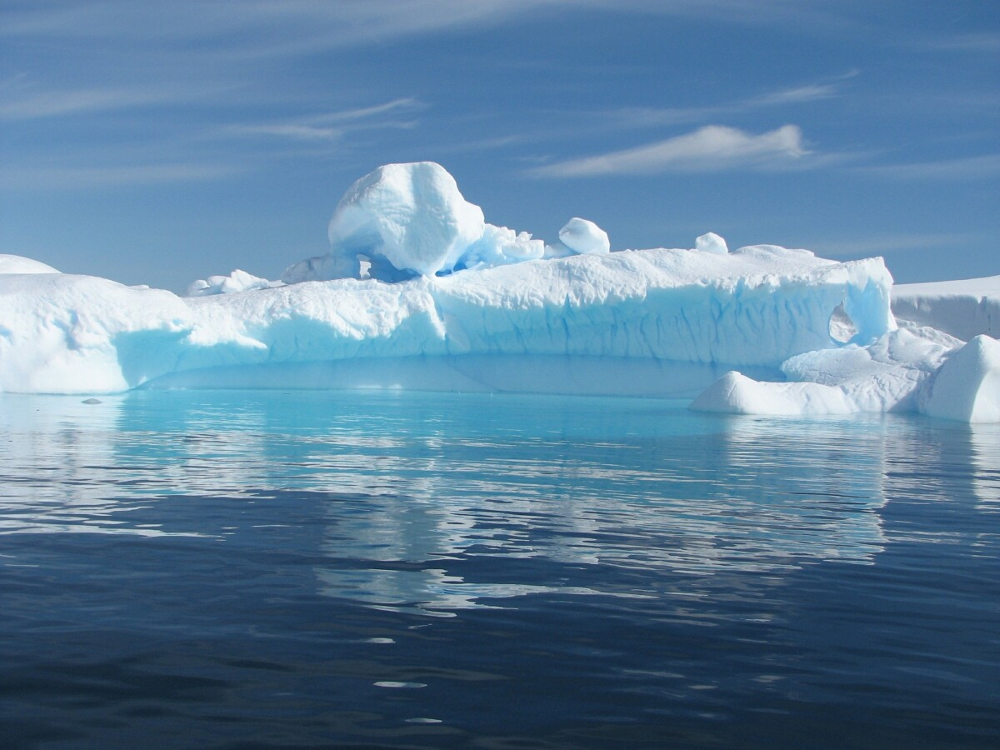
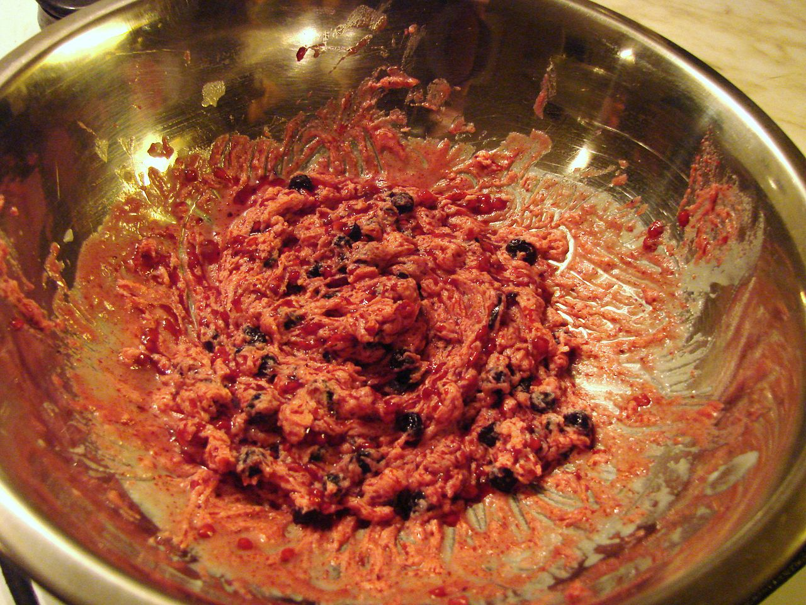
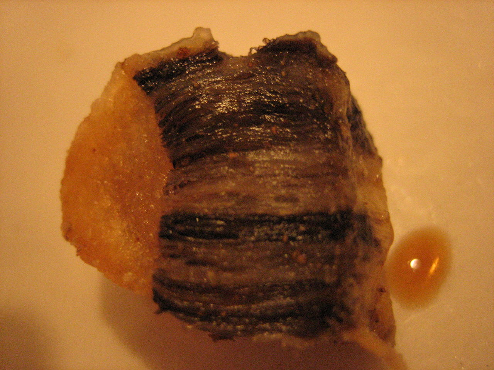
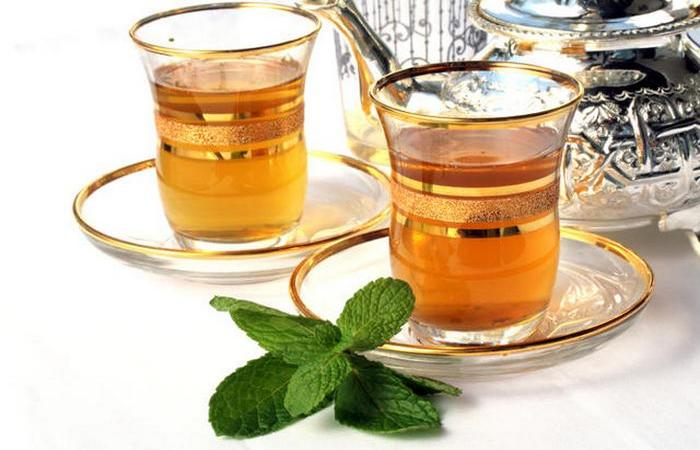
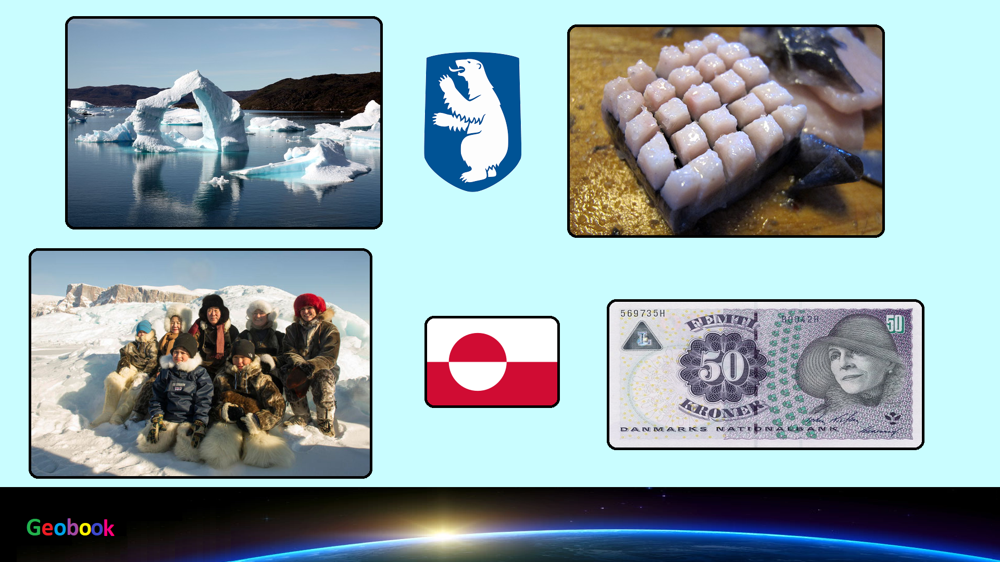

×

Greenland
Традиционная еда
Акутак — блюдо эскимосов Аляски и Северной Канады. Также известно как «эскимосское мороженое» (англ. Eskimo ice cream). Сами аборигены Аляски произносят название блюда как «агудак», что с юпикского языка переводится как «нечто жирное и перемешанное».

Мактак — традиционное блюдо эскимосской, ненецкой и чукотской кухонь, замороженные китовые кожа и сало. В некоторых диалектах, в частности, инуиннактунском, слово «мактак» означает только съедобную кожу.

Аюк — эскимосский чай из багульника. Пьётся горячим. Считается, что у аюка есть лечебный эффект.

____
